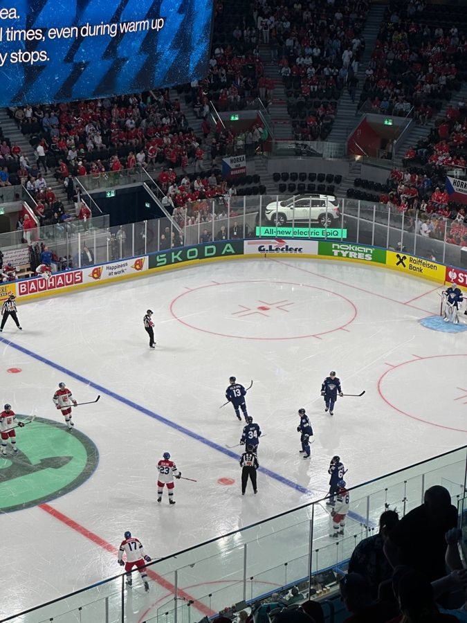
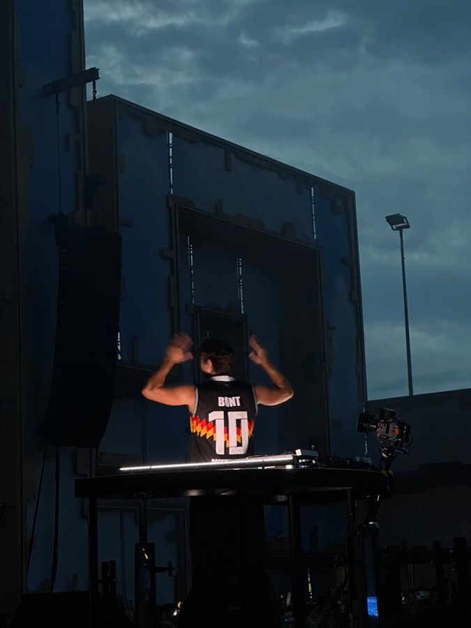

Bereit für die Abfahrt?
Lass uns gemeinsam die Lauberhorn-Abfahrt bestreiten. Wir fahren alle Etappen meines Werdegangs ab und entdecken unterwegs auch, was mich neben der Piste antreibt.
3… 2… 1… START!
Ab jetzt zählt jede Sekunde. Scroll weiter und verfolg oben live, wie gut du im Rennen bist.
Berufserfahrung
Assistentin Zeitungsredaktion (befristet), CH Media, Aarau
- Bearbeitung redaktioneller Anfragen per Telefon und E-Mail
- Unterstützung bei Honorarerfassung und -prüfung
- Koordination administrativer Abläufe, u. a. Dienstplanung, Absenzen und Spesen
- Bearbeitung von Akkreditierungsanfragen und Ombudsstellen-Themen
Assistentin Werbung/Marketing, Möbel Pfister AG, Suhr
- Unterstützung der Projektleitung bei Kommunikationskampagnen
- Mitarbeit bei der Entwicklung von Werbemitteln
- Erstellung von Präsentationen
- Planung, Erstellung und Auswertung von Newslettern
- Erarbeitung von Briefings und Timings
Kauffrau EFZ mit Berufsmaturität, Möbel Pfister AG, Suhr
- Einsätze in Marketing, Administration und Kundenservice
- Erstellung von Newslettern und Konkurrenzanalysen
- Bearbeitung von Lieferanten- und Kundenanliegen
Ausbildung
Bachelor Kommunikation & Medien, ZHAW Angewandte Linguistik, Winterthur
Kauffrau EFZ mit Berufsmaturität, Englisch Immersion, Handelsschule KV Aarau
Kompetenzen
- Content Creation
- Newsletter & Kampagnen Unterstützung
- Präsentationen & Briefings
- Social Media
- Corporate Communications
- Redaktion / Medien Administration
- Microsoft Office (SIZ ICT Advanced-User)
- SAP
- Adobe Photoshop, InDesign, Premiere Pro, Audition
- Canva
Neben der Piste
Neben dem Beruflichen bewegen mich vor allem drei Dinge: Sport, Musik und das Reisen.







Sport begleitet mich, seit ich klein bin. Ich bin seit meiner Kindheit im Turnverein, fahre Ski und gehe gerne wandern. Auch probiere ich immer wieder gerne etwas Neues aus.
Ziel!
Und nun stehe ich hier, mitten im Studium für Kommunikation und Medien und mit einigen Praxiserfahrungen im Gepäck. Ich freue mich darauf, das nächste Rennen gemeinsam mit euch zu bestreiten.